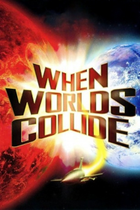

Country:United States, 83 minutes
Spoken languages:English, French, Hindi, Spanish
Genres:Sci-Fi
Director(s):Rudolph Maté
Writer(s):Philip Wylie, Sydney Boehm, Edwin Balmer
Video Codec:Unknown
Number: 2320


Certification:
Storyline:
When a group of astronomers calculate a star is on a course to slam into Earth, a few days before, it's accompanying planet will first pass close enough to the Earth to cause havoc on land and sea. They set about building a rocket so a few selected individuals can escape to the planet.
Cast:
Medium: Original DVD,
Comments: w/ The War of the Worlds
Loaned: No
Aspect ratio: Unknown